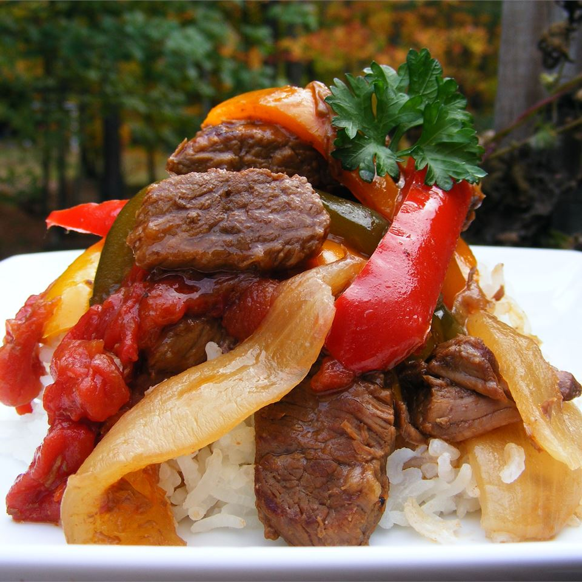

Pepper Steak

Description
Very tender and flavorful, this recipe is one of our family's favorites. It's great to make ahead of time in the slow cooker and then serve over rice, egg noodles, or chow mein.
Ingredients
- 2 pounds beef sirloin, cut into 2 inch strips
- garlic powder to taste
- 3 tablespoons vegetable oil
- 1 cube beef bouillon
- ¼ cup hot water
- 1 tablespoon cornstarch
- ½ cup chopped onion
- 2 large green bell peppers, roughly chopped
- 1 (14.5 ounce) can stewed tomatoes, with liquid
- 3 tablespoons soy sauce
- 1 teaspoon white sugar
- 1 teaspoon salt
- Sprinkle strips of sirloin with garlic powder to taste. In a large skillet over medium heat, heat the vegetable oil and brown the seasoned beef strips. Transfer to a slow cooker.
- Mix bouillon cube with hot water until dissolved, then mix in cornstarch until dissolved. Pour into the slow cooker with meat. Stir in onion, green peppers, stewed tomatoes, soy sauce, sugar, and salt.
- Cover, and cook on High for 3 to 4 hours, or on Low for 6 to 8 hours.
Return to Homepage